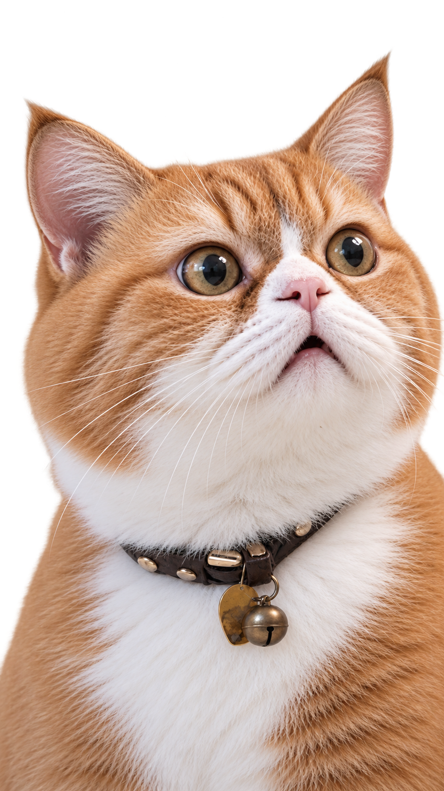

自己紹介
ABOUT ME
デザインと生活

UI/UX 設計師 & 網頁開發初學者
毛球 花子 (Fully Daily)
熱愛100%的深海鮪魚罐頭~我相信好的魚就像是一杯白開水，簡約、順暢且沒有魚刺。目前正專注於前端基礎技術（HTML/CSS）與視覺設計的結合應用。
HTML5 / CSS3
Figma / UI Design
Photoshop / Illustrator
攝影 / Photography
品牌視覺規劃
01. 鮪魚
適當的留白能讓視覺呼吸，引導使用者將注意力聚焦在最重要的核心內容上。
02. 鮭魚
汲取大地與和紙的柔和色彩，營造出讓人感到放鬆與舒適的網頁視覺體驗。
03. 海蝦
從字距排版到滑鼠懸停的微互動，用心打磨每一個細小的視覺品質。